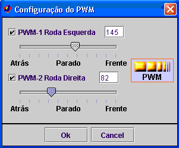

Este bloco permite controlar a velocidade dos motores do robot.
Podem-se configurar as velocidades de ambos os motores ou só de um matendo o outro fixo.
Note-se que a metade da escala equivale a manter o robot parado.
